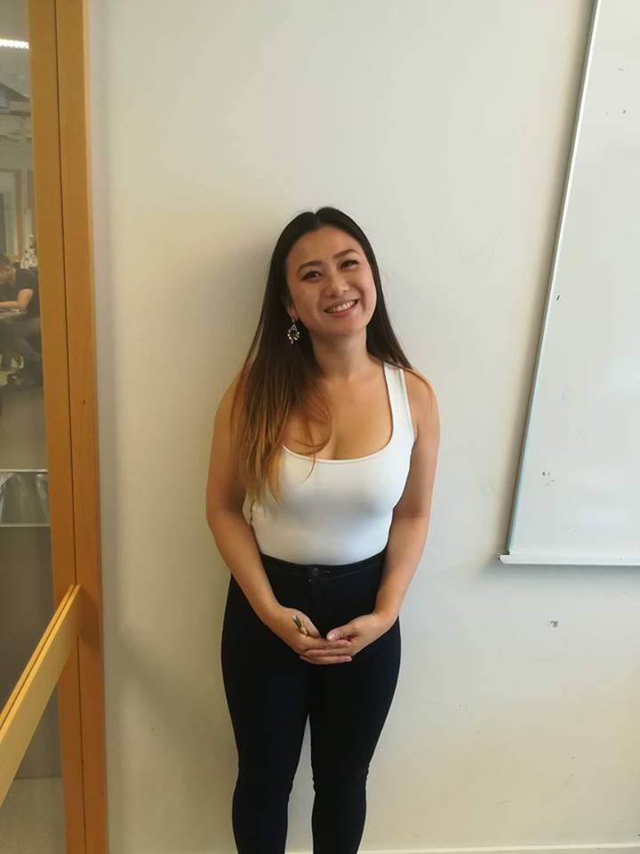

Legger til noe smått med info her senere.
Kristoffer Farstad

Anders Gorboe

Si-Jane Woo
Tor Ramstad

Note til megselv: Info om fadder, f.eks liker dataspill, klatring, studerer dataingiør eller kunst. Se GirlGen fra kristoffer. 8faddere til å begynne med?